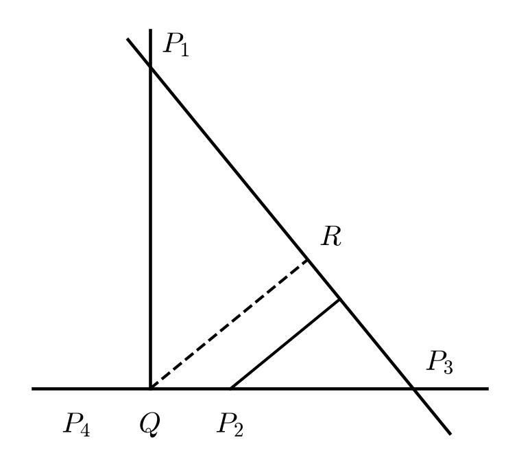

3. Бүрэн эрэмбэлэгдэх зарчим ба төгсгөлгүй буурах арга
Бүрэн эрэмбэлэгдэх зарчим нь математикийн олимпиадад түгээмэл хэрэглэгддэг. Түүний стандарт хэлбэр нь дараах байдалтай байна:
Баталгаа. S = \{x \mid x \in \mathbf{N}^*, \; x \notin T\} олонлогийг авч үзье. S = \mathbf{N}^* \setminus T болохыг хялбархан харж болно.
Хэрэв T олонлогт хамгийн бага бүхэл тоо байхгүй бол эерэг бүхэл тоо бүр S-д харьяалагдах бөгөөд улмаар T = \varnothing болж зөрчил үүснэ гэдгийг баталъя.
Эхлээд 1 \in S. Эс тэгвээс 1 \in T болж, 1 нь T-ийн хамгийн бага элемент болно.
Дараа нь 1, 2, \dots, n \in S, өөрөөр хэлбэл 1, 2, \dots, n тоонууд T-ийн элемент биш гэж таамаглая. Хэрэв n + 1 \in T бол n + 1 нь T-ийн хамгийн бага элемент болж зөрчил үүснэ. Иймд n + 1 \in S.
Тиймээс математикийн индукцийн хоёрдугаар хэлбэр ёсоор аливаа n \in \mathbf{N}^* хувьд n \in S гэж дүгнэж болно.
Ийнхүү бүрэн эрэмбэлэгдэх зарчим үнэн болох нь батлагдлаа.
Тодорхой бодлогуудыг бодох үед бид энэ зарчмын зарим өөр хэлбэр буюу мөрдөлгөөнүүдийг түгээмэл ашигладаг:
- Хамгийн их бүхэл тооны зарчим. M нь эерэг бүхэл тооны \mathbf{N}^* олонлогийн хоосон биш дэд олонлог бөгөөд дээрээсээ зааглагдсан байг (өөрөөр хэлбэл, аливаа x \in M хувьд x \leqslant a байх a \in \mathbf{N}^* оршино). Тэгвэл M олонлогт хамгийн их элемент оршино.
- Бодит тооны дурын төгсгөлөг олонлогт хамгийн бага ба хамгийн их элемент оршино.
- Эрэмбийн аксиом. n ширхэг бодит тооноос тогтох M олонлогийг x_1 < x_2 < \dots < x_n байхаар M = \{x_1, \dots, x_n\} гэж бичиж болно.
Бүрэн эрэмбэлэгдэх зарчим нь бодлого бодохдоо захын утгаас (хамгийн бага эсвэл хамгийн их элементээс) эхлэхийг бидэнд чиглүүлдэг. Энэ нь эргэж буцах санааг агуулдаг тул бид бодлогын мөн чанар руу эргэн хандах хэрэгтэй.
Төгсгөлгүй буурах арга нь тодорхойгүй тэгшитгэл бодохоос үүдэлтэй. Ферма ойролцоогоор 400 жилийн өмнө x^4 + y^4 = z^4 тэгшитгэлд эерэг бүхэл шийд байхгүйг батлахдаа энэ аргыг ашигласан юм. Түүний үндсэн санаа нь дараах байдалтай: «Хэрэв эерэг бүхэл n тооны тухай P(n) өгүүлбэр n = n_0 үед үнэн гэдгээс ямар нэг n_1 \in \mathbf{N}^* (n_1 < n_0) тооны хувьд P(n_1) мөн үнэн гэдгийг баталж чадвал P(n) өгүүлбэр ямар ч n \in \mathbf{N}^* хувьд биелэхгүй.»
Энэ нь бүрэн эрэмбэлэгдэх зарчмын нэг хэлбэр бөгөөд тооны онолын бодлого, ялангуяа тодорхойгүй тэгшитгэл бодоход түгээмэл хэрэглэгддэг.
Баталгаа. Эдгээр n цэгийн хоёр бүрийн хооронд нийт C_n^2 ширхэг зай байх тул хоорондын зай нь хамгийн бага байх хоёр цэг (тэдгээрийг A ба B гэе) заавал оршино (хэрэв ийм хос цэг нэгээс олон байвал аль нэгийг нь авъя).
Одоо AB хэрчмийг диаметрээ болгосон P тойргийг авч үзье. Тэгвэл P тойрог доторх (эсвэл дээрх) дурын C цэгийн хувьд ABC гурвалжны хамгийн урт тал нь AB байна. AB нь хамгийн бага зай тул үлдсэн n - 2 цэг P тойргийн гадна оршино гэж дүгнэж болно. Өгүүлбэр батлагдлаа.
Баталгаа. (1)-ийн хоёр талыг 4-өөр үржүүлж, бүтэн квадрат ялгавал: (2x + 3)^2 + (2y + 3)^2 + (2z + 3)^2 = 7. Хэрэв (1)-ийг хангах рационал x, y, z тоонууд оршдог бол a^2 + b^2 + c^2 = 7m^2 \tag{2} тодорхойгүй тэгшитгэлд m > 0 байх бүхэл шийд (a, b, c, m) оршино.
Хэрэв (2)-т m_0 > 0 байх бүхэл шийд (a_0, b_0, c_0, m_0) оршдог бол 0 < m_1 < m_0 байх өөр нэг бүхэл шийд (a_1, b_1, c_1, m_1) олддог гэдгийг баталж чадвал төгсгөлгүй буурах санаа ёсоор m_0 > m_1 > m_2 > \dots гэсэн эерэг бүхэл тооны буурах дараалал үүсэж зөрчилд хүрнэ.
Үнэхээр, хэрэв m_0 сондгой бол m_0^2 \equiv 1 \pmod{8} тул a_0^2 + b_0^2 + c_0^2 \equiv 7 \pmod{8} болно. Гэвч бүхэл тооны квадрат нь модуль 8-аар 0, 1, 4-тэй жишүү байдаг. Иймд a_0^2 + b_0^2 + c_0^2 \equiv 0, 1, 2, 3, 4, 5, 6 \pmod{8} болох бөгөөд a_0^2 + b_0^2 + c_0^2 \equiv 7 \pmod{8} байх боломжгүй. Энэ нь зөрчил тул m_0 тэгш байна. Одоо a_0^2 + b_0^2 + c_0^2 = 7m_0^2 \equiv 0 \pmod{4} болно. Нөгөө талаас бүхэл тооны квадрат нь модуль 4-өөр 0, 1-тэй жишүү тул a_0, b_0, c_0 нь бүгд тэгш байх ёстой.
Тэгвэл a_1 = \frac{1}{2}a_0, b_1 = \frac{1}{2}b_0, c_1 = \frac{1}{2}c_0, m_1 = \frac{1}{2}m_0 гэж авбал 0 < m_1 < m_0 нөхцөлийг хангах (a_1, b_1, c_1, m_1) шийд гарна.
Дүгнэж хэлбэл, (1) тэгшитгэлд рационал шийд байхгүй.
Тайлбар. Хамгийн бага элементээс эхлэх эсвэл тодорхой элементээс бага элементийг олох нь бидний энэ параграфт танилцуулж буй чухал санаа юм. Эдгээр нь үндсэндээ математикийн индукцийн тусгай хэлбэрүүд бөгөөд математикийн индукцийг эзэмшихэд тулгардаг бэрхшээл, сорилтыг харуулахын зэрэгцээ хүмүүсийг математикт татдаг гоо сайхныг илтгэнэ.
Баталгаа. Энэ бол алдарт Сильвестрийн теорем юм. Үүнийг батлах олон арга бий. Бүрэн эрэмбэлэгдэх зарчмыг ашигласан товч баталгааг толилуулъя.
P_1, \dots, P_n цэгүүдийн ядаж хоёрыг нь дайрсан P_i P_j шулуунуудыг авч үзье. Шулуун дээр оршдоггүй цэгүүдээс тэдгээр шулуун хүртэлх зай 0-ээс их байна. Ийм зайн тоо төгсгөлөг (учир нь хамгийн ихдээ C_n^2 шулуун болон тэдгээр дээр оршдоггүй төгсгөлөг олон цэг бий). Иймд эдгээр зайн дунд хамгийн бага утга оршино.
Ерөнхий чанарыг алдагдуулахгүйгээр P_1 цэгээс P_2 P_3 шулуун хүртэлх зай хамгийн бага нь байг. P_2 P_3 шулуун дээр P_1, \dots, P_n цэгүүдээс өөр цэг байхгүй гэдгийг баталъя.
Хэрэв P_2 P_3 шулуун дээр өөр нэг P_4 цэг оршдог бол P_1 цэгээс P_2 P_3 шулуунд буулгасан проекцийг Q гэе. Тэгвэл P_2, P_3, P_4 гурван цэгийн ядаж хоёр нь Q цэгийн нэг талд оршино. P_2 ба P_3 цэгүүд Q-ийн нэг талд оршиж, |QP_2| < |QP_3| байг (Зураг 4-ийг үз).

Тэгвэл P_2 цэгээс P_1 P_3 шулуун хүртэлх зай нь Q цэгээс P_1 P_3 шулуун хүртэлх QR зайнаас бага буюу тэнцүү бөгөөд QR < P_1 Q тул P_1 Q нь хамгийн бага зай гэдэгтэй зөрчилдөнө. Иймд P_2 P_3 шулуун дээр өөр цэг оршихгүй.
Тиймээс өгүүлбэр үнэн.
Баталгаа. Дараах тэгшитгэлд эерэг бүхэл шийд байхгүйг батлахад хангалттай: x^4 + y^4 = z^2. \tag{1} Хэрэв шийд оршдог бол (1)-ийн бүх эерэг бүхэл шийдүүдийн дундаас z нь хамгийн бага байх (x, y, z) шийдийг авъя. Одоо x ба y-ийн хамгийн их ерөнхий хуваагчийг d гэе, өөрөөр хэлбэл (x, y) = d.
Тэгвэл d^2 \mid (x^4 + y^4) тул d^2 \mid z^2, улмаар d \mid z болно. Иймд d = 1 (эс тэгвээс \left(\frac{x}{d}, \frac{y}{d}, \frac{z}{d}\right) нь мөн (1)-ийн шийд болж z-ийн хамгийн бага гэдэгтэй зөрчилдөнө). Тиймээс (x^2, y^2, z) нь u^2 + v^2 = w^2 \tag{2} тэгшитгэлийн харилцан анхны шийд болно.
y^2-ийг тэгш гэж үзье. (2)-ийн ерөнхий шийдээс нэг нь сондгой, нөгөө нь тэгш бөгөөд (a, b) = 1 байх a, b \in \mathbf{N}^* тоонууд оршиж, x^2 = a^2 - b^2, \quad y^2 = 2ab, \quad z = a^2 + b^2 биелнэ.
y^2 тэгш тул x сондгой байна. x^2 + b^2 = a^2 гэдгээс нэг нь сондгой, нөгөө нь тэгш бөгөөд (m, n) = 1 байх m, n \in \mathbf{N}^* тоонууд оршиж, x = m^2 - n^2, \quad b = 2mn, \quad a = m^2 + n^2 болно.
Тэгвэл y^2 = 4mn(m^2 + n^2) болно. (m, n) = 1 тул (m, m^2 + n^2) = (n, m^2 + n^2) = 1 байна.
Иймд m^2 + n^2, m, n нь бүгд бүтэн квадратууд болно.
Тэгвэл m = r^2, n = s^2, m^2 + n^2 = z_1^2 (r, s, z_1 \in \mathbf{N}^*) гэж бичье. Тэгвэл r^4 + s^4 = z_1^2 болох бөгөөд z_1^2 = a < z байна. Энэ нь (x, y, z) шийд дэх z нь бүх шийдийн дотроос хамгийн бага нь гэсэнтэй зөрчилдөнө.
Тиймээс (1) тэгшитгэлд эерэг бүхэл шийд байхгүй. Ийнхүү өгүүлбэр батлагдлаа.
Тайлбар. Бид төгсгөлгүй буурах аргын өөр нэг хэлбэрийг ашиглалаа: > «Хэрэв эерэг бүхэл n тооны тухай P(n) өгүүлбэр зарим n \in \mathbf{N}^* хувьд үнэн бол P(n) үнэн байх хамгийн бага бүхэл тоог n_0 гэж авъя (n_0 орших нь бүрэн эрэмбэлэгдэх зарчмаар баталгаажна). Хэрэв P(n_1) үнэн байх n_1 \in \mathbf{N}^* (n_1 < n_0) тоо олддог гэдгийг баталж чадвал P(n) өгүүлбэр ямар ч n \in \mathbf{N}^* хувьд биелэхгүй.»
Бодолт. Ийм M олонлог оршихгүй.
Үнэхээр, хэрэв ийм M олонлог оршдог бол M нь төгсгөлөг тул түүнээс n ширхэг вектор сонгох боломжийн тоо мөн төгсгөлөг байна. Тиймээс сонгосон n векторын нийлбэрийн урт хамгийн их байх сонголт заавал оршино. Тэдгээр n векторыг \boldsymbol{u}_1, \boldsymbol{u}_2, \dots, \boldsymbol{u}_n гэж тэмдэглээд \boldsymbol{u}_1 + \boldsymbol{u}_2 + \dots + \boldsymbol{u}_n = \boldsymbol{s} гэе.
Координатын эхээс \boldsymbol{s} векторт перпендикуляр l шулуун татъя. Тэгвэл l шулуун хавтгайг хоёр хагас хавтгайд хуваана. M олонлогийн векторуудаас \boldsymbol{s} векторын орших талд байрлах векторуудын олонлогийг M_1, харин \boldsymbol{s}-ийн эсрэг талд эсвэл l шулуун дээр орших векторуудын олонлогийг M_2 гэе. Тэгвэл M_1 \cap M_2 = \varnothing ба M_1 \cup M_2 = M болно.
(2) нөхцөл ёсоор \boldsymbol{u}_1 + \dots + \boldsymbol{u}_n + \boldsymbol{v}_1 + \dots + \boldsymbol{v}_{n-1} = \boldsymbol{0} байх \boldsymbol{v}_1, \dots, \boldsymbol{v}_{n-1} \in M векторууд оршино. Өөрөөр бичвэл: \boldsymbol{v}_1 + \dots + \boldsymbol{v}_{n-1} = -\boldsymbol{s}. Одоо \boldsymbol{v} \in M_2 бөгөөд \boldsymbol{v} \notin \{\boldsymbol{v}_1, \dots, \boldsymbol{v}_{n-1}\} байх \boldsymbol{v} вектор оршихгүй гэдгийг баталъя.
Хэрэв ийм \boldsymbol{v} вектор оршдог бол \boldsymbol{v} \cdot \boldsymbol{s} \leqslant 0 байна. Иймд: |\boldsymbol{v}_1 + \dots + \boldsymbol{v}_{n-1} + \boldsymbol{v}|^2 = |\boldsymbol{v} - \boldsymbol{s}|^2 = |\boldsymbol{s}|^2 - 2\boldsymbol{v} \cdot \boldsymbol{s} + |\boldsymbol{v}|^2 > |\boldsymbol{s}|^2, энэ нь бидний \boldsymbol{u}_1, \dots, \boldsymbol{u}_n векторуудыг сонгосон (хамгийн их урттай байх) нөхцөлтэй зөрчилдөнө.
Тиймээс |M_2| \leqslant n - 1.
Нөгөө талаас (1) нөхцөлөөс \boldsymbol{u}_1 + \dots + \boldsymbol{u}_n + \boldsymbol{u}'_1 + \dots + \boldsymbol{u}'_n = \boldsymbol{0} байх \boldsymbol{u}'_1, \dots, \boldsymbol{u}'_n \in M векторууд оршино. Өөрөөр хэлбэл, \boldsymbol{u}'_1 + \dots + \boldsymbol{u}'_n = -\boldsymbol{s}. Үүнд (2) нөхцөлийг хэрэглэвэл \boldsymbol{u}'_1 + \dots + \boldsymbol{u}'_n + \boldsymbol{v}'_1 + \dots + \boldsymbol{v}'_{n-1} = \boldsymbol{0}, өөрөөр хэлбэл \boldsymbol{v}'_1 + \dots + \boldsymbol{v}'_{n-1} = \boldsymbol{s} байх \boldsymbol{v}'_1, \dots, \boldsymbol{v}'_{n-1} векторууд оршино.
Үүнтэй яг ижил аргаар \boldsymbol{v}' \in M_1 бөгөөд \boldsymbol{v}' \notin \{\boldsymbol{v}'_1, \dots, \boldsymbol{v}'_{n-1}\} байх \boldsymbol{v}' вектор оршихгүй гэдгийг баталж чадна. Иймд |M_1| \leqslant n - 1.
Эндээс |M| \leqslant 2n - 2 болж зөрчил үүснэ. Тиймээс дээрх нөхцөлүүдийг хангах M олонлог оршихгүй.
Бодолт. \beta = \alpha + 2 үед x = y = 1 гэж авахад (1) биелэхийг ажиглавал \beta_{\max} \geqslant \alpha + 2 байна.
Нөгөө талаас \beta нь нөхцөлийг хангах эерэг бүхэл тоо байг. (1) тэгшитгэлийг хангах бүх эерэг бүхэл тоон хосуудын дотроос (энд \beta-г тогтмол гэж үзнэ) x + y нийлбэр нь хамгийн бага байх (x, y) хосыг авъя.
- Хэрэв x = y бол \beta = \frac{2x^2 + \alpha}{x^2} = 2 + \frac{\alpha}{x^2} \leqslant 2 + \alpha. - Хэрэв x \neq y бол ерөнхий чанарыг алдагдуулахгүйгээр x > y гэж үзье. Тэгвэл x-ийн хувьд авч үзсэн x^2 - \beta y \cdot x + y^2 + \alpha = 0 \tag{2} квадрат тэгшитгэлд өөр нэг бодит язгуур \bar{x} оршино.
Виетийн теорем болон (2)-оос \bar{x} = \beta y - x \in \mathbf{Z} гэдгийг гаргаж болно. Мөн x \cdot \bar{x} = y^2 + \alpha буюу \bar{x} = \frac{y^2 + \alpha}{x} > 0 гэдгийг тооцвол \bar{x} нь эерэг бүхэл тоо болно. Тэгвэл (\bar{x}, y) хос нь мөн (1)-ийг хангах эерэг бүхэл тоон хос болно. Тиймээс: \bar{x} + y = \frac{y^2 + \alpha}{x} + y \geqslant x + y. Энд бид x + y нь хамгийн бага гэдгийг ашиглалаа.
Тэгвэл x^2 \leqslant y^2 + \alpha ба x \geqslant y + 1 болно. Цаашилбал: \begin{aligned}
\beta = \frac{x^2 + y^2 + \alpha}{xy} &\leqslant \frac{2(y^2 + \alpha)}{xy} \leqslant \frac{2(y^2 + \alpha)}{y(y + 1)} \\
&= \frac{2y^2}{y^2 + y} + \frac{2\alpha}{y(y + 1)} < 2 + \alpha.
\end{aligned} Энэ нь \beta_{\max} \leqslant 2 + \alpha болохыг харуулна.
Дүгнэж хэлбэл, \beta-гийн хамгийн их утга нь \alpha + 2 байна.
Бодолт. Нөхцөлийг хангах бүх эерэг бүхэл тооны олонлогийг S гэе; өөрөөр хэлбэл, аливаа n \in S (n > 1) тооны 1-ээс их дурын хуваагч бүр a^r + 1 (a, r \in \mathbf{N}^*, r \geqslant 2) хэлбэртэй бичигдэнэ.
Аливаа n \in S (n > 2) хувьд n = a^r + 1 байх a, r \in \mathbf{N}^* (a, r > 1) тоонууд оршино. n-ийг энэ хэлбэрээр бичих үед a нь хамгийн бага нь байг (өөрөөр хэлбэл, a = b^t байх b, t \in \mathbf{N}^*, t > 1 оршихгүй). Тэгвэл r заавал тэгш байх ёстой (эс тэгвээс r-ийг сондгой гэе. Тэгвэл (a + 1) \mid n тул a + 1 нь b^t + 1 хэлбэрээр бичигдэж a = b^t болно. Энэ нь a хамгийн бага гэдэгтэй зөрчилдөнө). Иймд S олонлогийн 1-ээс их элемент бүр n = x^2 + 1 (x \in \mathbf{N}^*) хэлбэрээр бичигдэнэ.
Одоо S олонлогийн бүх n элементийг олъё.
Хэрэв n анхны тоо бол n нь x^2 + 1 хэлбэртэй бичигддэг анхны тоо байна.
Хэрэв n зохиомол тоо бол бодлогыг хоёр тохиолдлоор авч үзье: 1. Хэрэв n сондгой зохиомол тоо бол p, q, pq \in S байх сондгой анхны p, q тоонууд оршино. Тэгвэл: p = 4a^2 + 1, \quad q = 4b^2 + 1, \quad pq = 4c^2 + 1 нөхцөлийг хангах a, b, c \in \mathbf{N}^* оршино.
a \leqslant b < c гэж үзэж болно. Тиймээс pq - q = 4(c^2 - b^2) болох тул q \mid 4(c - b)(c + b). q нь сондгой анхны тоо тул q \mid (c - b) эсвэл q \mid (c + b) байна. Эндээс q < 2c болж pq < 4c^2 < 4c^2 + 1 = pq гэсэн зөрчилд хүрнэ. 2. Хэрэв n тэгш зохиомол тоо бол 2^2 \notin S гэдгийг өмнөх гаргалгаатай хослуулбал n зөвхөн 2q хэлбэртэй байж чадна (энд q нь сондгой анхны тоо). Одоо q, 2q \in S тул: q = 4a^2 + 1, \quad 2q = b^2 + 1 байх a, b \in \mathbf{N}^* оршино.
Иймд q = b^2 - 4a^2 = (b - 2a)(b + 2a) болох тул b - 2a = 1, b + 2a = q байна. Цаашилбал q - 1 = 4a болно. q - 1 = 4a^2 гэдгийг тооцвол 4a = 4a^2 буюу a = 1, b = 3, q = 5, n = 10 гарна. Өөрөөр хэлбэл, S олонлогт цорын ганц тэгш зохиомол тоо 10 оршино.
Дүгнэж хэлбэл, аливаа n \in S нь 10 эсвэл x^2 + 1 хэлбэртэй анхны тоо байх ёстой. Ийм n тоо бодлогын нөхцөлийг хангах нь илэрхий. Иймд: S = \{x^2 + 1 \mid x \in \mathbf{N}^*, \; x^2 + 1 \text{ нь анхны тоо}\} \cup \{10\}.
Баталгаа. Бодлогыг эрэмбийн аксиом ашиглан бодъё.
Эхний овооны зооснуудын жин x_1 \geqslant \dots \geqslant x_n, хоёр дахь овооны зооснуудын жин y_1 \geqslant \dots \geqslant y_m байг. Бодлогын нөхцөлөөс аливаа k \leqslant \min\{m, n\} хувьд x_1 + \dots + x_k \leqslant y_1 + \dots + y_k гэдэг нь мөрдөн гарна.
Аливаа x \in \mathbf{R} хувьд: \begin{aligned}
x_1 \geqslant \dots \geqslant x_s &\geqslant x > x_{s+1} \geqslant \dots \geqslant x_n, \\
y_1 \geqslant \dots \geqslant y_t &\geqslant x > y_{t+1} \geqslant \dots \geqslant y_m
\end{aligned} байг. Бид дараах тэнцэтгэл бишийг батлах шаардлагатай: sx + x_{s+1} + \dots + x_n \geqslant tx + y_{t+1} + \dots + y_m. \tag{1} s эсвэл t оршихгүй үед (нөхцөл ёсоор хэрэв t оршихгүй бол s мөн оршихгүй гэдгийг ажиглая) (1) тэнцэтгэл биш нь x_1 + \dots + x_n = y_1 + \dots + y_m тэнцэтгэлээс илэрхий мөрдөн гарна. Цаашид s ба t хоёулаа орших тохиолдлыг авч үзье.
x_1 + \dots + x_n = y_1 + \dots + y_m = A гэе. Тэгвэл (1) нь дараах тэнцэтгэл биштэй эквивалент болно: \begin{aligned} sx + (A - x_1 - \dots - x_s) &\geqslant tx + (A - y_1 - \dots - y_t) \\ \iff x_1 + \dots + x_s + (t - s)x &\leqslant y_1 + \dots + y_t. \tag{2} \end{aligned} - Хэрэв t \geqslant s бол: \begin{aligned} x_1 + \dots + x_s + (t - s)x &= x_1 + \dots + x_s + \underbrace{x + \dots + x}_{t - s} \\ &\leqslant y_1 + \dots + y_s + y_{s+1} + \dots + y_t \end{aligned} болж (2) тэнцэтгэл биш биелнэ. - Хэрэв t < s бол (2) нь дараах тэнцэтгэл биштэй эквивалент: x_1 + \dots + x_s \leqslant y_1 + \dots + y_t + \underbrace{x + \dots + x}_{s - t}. \tag{3} Бодлогын нөхцөлөөс: \begin{aligned} x_1 + \dots + x_s &\leqslant y_1 + \dots + y_t + y_{t+1} + \dots + y_s \\ &\leqslant y_1 + \dots + y_t + \underbrace{x + \dots + x}_{s - t} \end{aligned} болох тул (3) биелнэ.
Дүгнэж хэлбэл, өгүүлбэр үнэн.